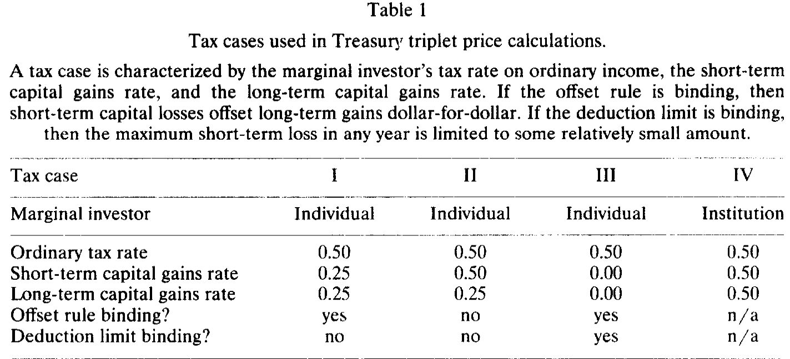
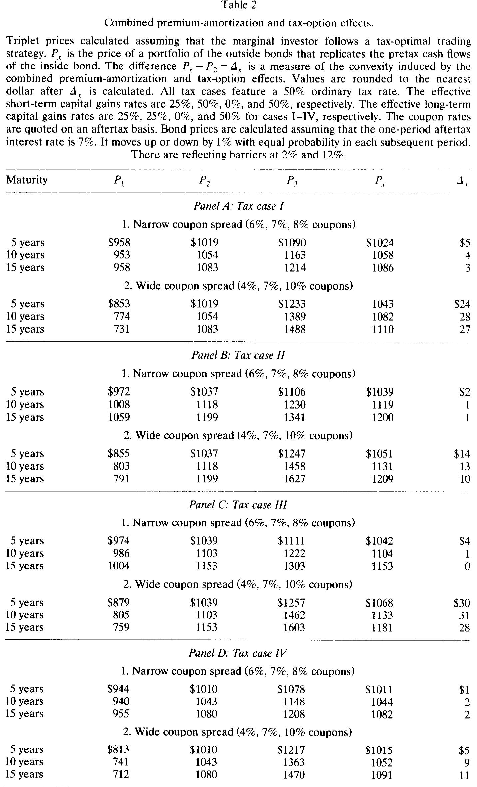
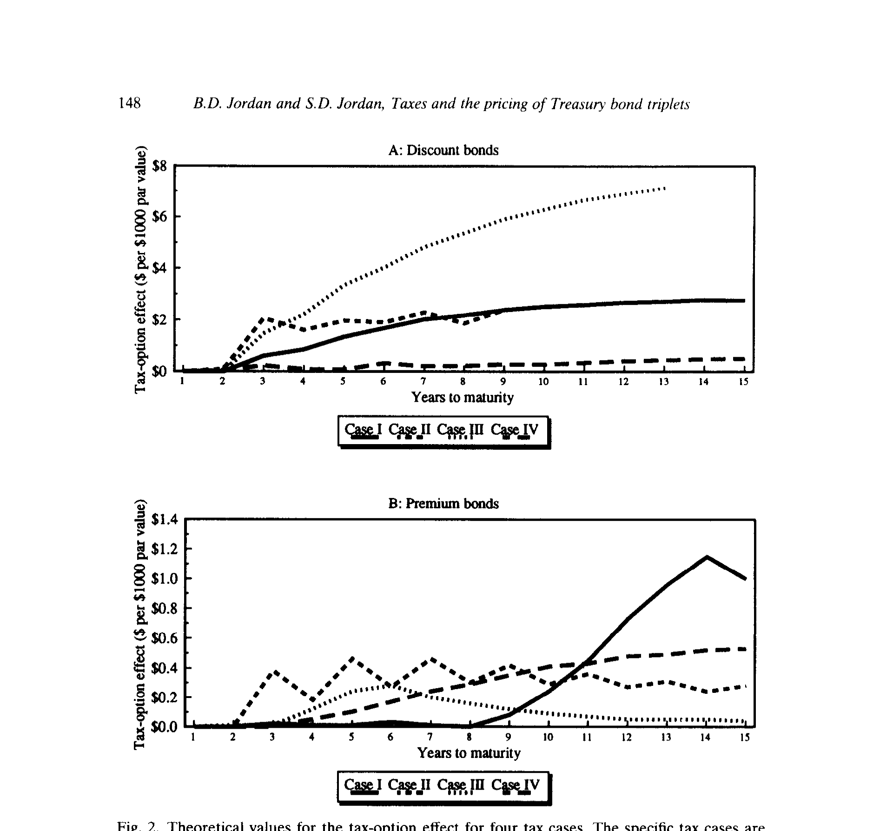
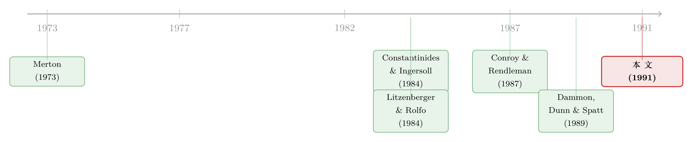

三只到期日相同的国债，中间那只为什么总是偏便宜一点点
本文读的是 Jordan & Jordan (1991, JFE)：三只到期日相同、只有票息不同的国债构成一个「三元组」，理论上中间那只的价格应当恰好是两只外侧债券的线性组合；作者证明，税收会让这个关系变成凸的——中间债券略微偏便宜——但这个凸性小到被买卖价差吃掉，根本不够构成套利。顺带，他们指出前人 Litzenberger-Rolfo (1984) 因为把应计利息算进了成本基差，错误地分类了债券，从而误判了「税收期权效应」。
1 一个看上去白送的套利
先讲一个几乎像数学游戏一样干净的设定。
假设有三只美国国债，到期日完全相同，只是票息不一样：比如 8%、10%、12%。它们的违约风险都是零（都是美国政府的债），现金流的形状也只差在票息这一项上。那么，一个「一半买 8%、一半买 12%」的组合，它每一期、每一笔现金流，都和那只 10% 的债券分毫不差。
既然税前现金流可以被完美复制，无摩擦市场里就只剩一个结论：中间那只债券的价格，必须恰好落在两只外侧债券价格的正中间。否则，你就能一边做多便宜的那侧、一边做空贵的那侧，凭空赚一笔无风险的钱。
把它写成符号。设三只债券的票息为 \(C_1 < C_2 < C_3\)，价格为 \(P_1, P_2, P_3\)。要用外侧两只复制中间这只，先解出权重 \(X\)：
$$ C_2 = X\,C_1 + (1-X)\,C_3 $$
$$ X = \frac{C_3 - C_2}{C_3 - C_1} $$
于是这个复制组合的价格就是
$$ P_c = X\,P_1 + (1-X)\,P_3 $$
无摩擦市场里必须满足
$$ P_2 = P_c $$
这就是国债「三元组」(Treasury triplet) 的故事起点。一个自然的问题是：现实里 \(P_2 = P_c\) 真的成立吗？如果不成立，是谁在偏离、偏向哪一边、偏多少？
2 第一道摩擦：溢价债券的税收偏袒
现实里第一个要面对的摩擦，是利息收入的普通所得税，外加一条不太起眼但很关键的规则——溢价摊销 (premium amortization)。
对 1986 年前发行、且按高于面值（溢价）交易的债券，税法基本上要求买方把这笔溢价在债券剩余生命里逐年摊销，每年的摊销额可以抵扣当年的利息收入，同时把成本基差往下调。而对折价债券，买方则要在到期时确认一笔资本利得。一句话：税收偏袒溢价债券，亏待折价债券。
这种不对称会在「混合三元组」（既含溢价又含折价债券）里制造凸性。于是等式 (4) 要松成不等式：
$$ P_2 \le X\,P_1 + (1-X)\,P_3 $$
中间债券会比线性预测略低。这就是所谓溢价摊销效应 (premium-amortization effect)。
注意：只要三只债券全是折价或全是溢价（即所谓「纯三元组」），单凭溢价摊销，等式 (4) 仍然成立。要让纯三元组也变凸，需要第二道、也是本文真正的主角——税收期权。
3 真正的主角：那只藏在持有里的「税时择权」
接着，一个更深的观察登场了。
教科书做债券定价时，习惯假设投资者「持有到期」。可是在不确定的利率和现行税法下，这个假设几乎一定是不理性的。设想买了债券一年后利率上行、债价下跌——理性的做法（先不计交易成本）是做一次洗售 (wash sale)：把债券卖掉、再立刻买回来。这一卖一买，既兑现了一笔可抵税的亏损，又把成本基差重置到更低的水平，还把持有期重新拨回短期状态。如果价格继续往下走，就再做一次；如果价格涨回基差之上，就干脆攥着不动，把税收负债往后拖。
换句话说，税法把「何时实现盈亏」的选择权交给了投资者——债券价格里因此嵌着一份税时择权 (tax-timing option)。这正是 Constantinides & Ingersoll (1984) 那篇经典的核心。（把「亏损早实现、盈利晚实现」当成一笔有价值的期权，这个直觉和股票端「资本利得锁定效应」是同一家亲戚，参见《不是市场太激动，是股东舍不得交税》与《年底甩亏损，转身又买回》。）
但真正关键的一步，是 Merton (1973) 的那个老结论：一篮子期权，比一份写在这一篮子资产上的期权更值钱。放到三元组里——外侧两只债券各自带一份税时择权，它们的期权价值之和，超过中间那只单一债券所带的期权价值。于是即便三只债券全是折价、或全是溢价，价格之间也会出现凸性。等式 (5) 里那个「弱」不等号可以被换成严格不等号：
$$ P_2 < P_c $$
这就是税收期权效应 (tax-option effect)。它是本文反复要讲透的那一个核心：纯三元组里，中间债券会偏便宜，而偏便宜的原因不是溢价摊销，而是那份期权的「凸性」。
4 模型：把这份期权一步步解出来
要知道这份期权到底值几个钱，光有直觉不够，得把它算出来。作者沿用 Constantinides-Ingersoll 的框架，把债券估值写成一个动态规划 (dynamic programming) 问题。
设想交易发生在每一期期末。此刻，边际投资者 (marginal investor) 观察到债券的市价和当前利率，比较两件事：立刻卖出能拿到的税后净额，与继续持有的折现期望价值。哪个大就选哪个。债券对边际投资者的价值 \(V\) 因此是：
这一个 \(\max\{\cdot\}\)，就是整份税时择权的全部精髓：它给了投资者一个「卖还是不卖」的最优停时选择。
第一块，立刻卖出的税后净额。 设市价为 \(P\)、投资者成本基差为 \(\bar{P}\)、适用税率为 \(\tau\)（短期持有用短期资本利得率 \(\tau\)，长期持有用长期资本利得率 \(\tau_L\)）：
$$ V_s = P - (P - \bar{P})\,\tau $$
直觉很直白：卖出拿到 \(P\)，但要为「市价高出基差的那部分」\((P-\bar{P})\) 缴税；如果 \(P < \bar{P}\)（亏损），这一项就变成税收返还（抵扣）。
第二块，继续持有的价值。 它由下一期价值的期望递归折现给出。这里要区分债券现在是折价还是溢价（因为溢价才有摊销抵扣）：
$$ V_H = \frac{(1-\tau_c)\,C + E(V')}{1+r}, \qquad P \le 1000 $$
$$ V_H = \frac{(1-\tau_c)\,C + (\bar{P}-1000)\,\tau_c/t + E(V')}{1+r}, \qquad P > 1000 $$
其中 \(C\) 是年票息、\(\tau_c\) 是普通所得税率、\(r\) 是一期税后利率、\(E(V')\) 是下一期债券价值的期望、\(t\) 是购买时距到期的期数。第二行那个多出来的 \((\bar{P}-1000)\,\tau_c/t\)，就是溢价债券每期可以摊销抵扣的税收好处（线性摊销法，这是 1986 年前允许、且收益最大的那一种）。
边界条件，到期时刻。 到期时除息后市价等于面值 \(1000\)；折价债券要补缴一笔资本利得税：
$$ V = 1000, \qquad \bar{P} \ge 1000 $$
$$ V = 1000 - (1000 - \bar{P})\,\tau_L, \qquad \bar{P} < 1000 $$
怎么求解？ 利率 \(r\) 是唯一的状态变量，跟着一个无漂移的二项随机游走走：从 7% 起步，每期等概率上下各跳 1%，并在 2% 和 12% 处各设一道反射壁（防止负利率、也保持无漂移）。短期利率变动的标准差因此约为 \(\big(0.5(0.01)^2 + 0.5(-0.01)^2\big)^{1/2}=0.01\)。从到期日（\(V=1000\)）往回倒推，用上面这组方程逐期回溯，就能算出任意 \(t\) 期债券的价值。代价是组合爆炸：10 年期要算 $2^{10}=1024$ 条利率路径，30 期则高达 \(2^{30}\approx 10.7\) 亿条——所以作者只算到 15 年以内（而样本里的三元组到期都不超过 6 年，足够用了）。
不同税收情形下，投资者的最优交易策略并不一样。作者沿用四种税收情形（见下表标注的口径），普通所得税率统一设为 50%（大致对应 1986 年前个人最高边际税率），区别在于短期/长期资本利得率、亏损是否必须先冲抵长期收益（offset rule）、以及年度可抵扣亏损是否有上限（deduction limit）。

Table 1
5 算出来到底有多大：小，非常小
把模型跑起来，作者用 \(\Delta_c = P_c - P_2\) 来度量凸性的美元大小——这正是「中间债券比线性预测便宜了多少」。
结论先抛在这里：凸性确实存在，但小得可怜。看 Table 2（溢价摊销与税收期权的合并效应）：在票息间距较窄（6%、7%、8%）的纯三元组里，5 年期的 \(\Delta_c\) 只有约 \$5（债券价格在 \$1000 量级，也就是 0.5% 上下），10 年、15 年甚至更小；只有在票息间距很宽（4%、7%、10%）时，\(\Delta_c\) 才爬到 \$24–\$31 的水平（约 2%–3%）。

Table 2
而如果把溢价摊销那一块剥掉、单独留下税收期权效应（这才是本文要精确隔离的东西），数字还要更小。如下图所示，四种税收情形里，纯粹由税时择权带来的凸性，在大多数到期与票息组合下都只有几美元的量级。

Figure 2: Theoretical values for the tax-option effect for four tax cases. The specific tax cases are
于是反转就来了：这点凸性，在现实里几乎一定会被买卖价差和其他摩擦淹没。作者把无套利约束也写成不等式——考虑到做多要按卖价 (ask)、做空要按买价 (bid) 成交，对免税投资者而言，可执行的边界是
$$ P_2^{\,bid} \le X\,P_1^{\,ask} + (1-X)\,P_3^{\,ask} $$
只要中间债券的「买价区间」和外侧组合的「卖价区间」还有交集，套利就无从下手。再加上国债做空必须通过回购协议 (repo) 实现、而长期回购市场几乎不存在这道现实障碍，结论顺理成章：国债价格在票息上是凸的，但凸得太轻，不足以撑起任何套利。（这个「利差是真的、利润却被摩擦吃光」的母题，在固定收益里反复出现，参见《捡硬币的人，真的站在压路机前面吗？》与《利差明明在收敛，利润却归零》。）
6 一个被应计利息绊倒的前人
本文还有一段「纠错」的笔墨，值得单独说，因为它解释了为什么前人的结论需要修正。
Litzenberger & Rolfo (1984) 想要把税收期权效应从溢价摊销效应里隔离出来，办法是只研究「全溢价」或「全折价」的纯三元组。这个思路本身没错。问题出在怎么判定一只债券是溢价还是折价。
为税收目的，正确的判据是净价 (flat price)，也就是剔除应计利息后的价格——因为应计利息在购买当年可单独抵扣，本就不进成本基差。但作者复现后发现，Litzenberger-Rolfo 实际是按「价格 + 应计利息」来分类的。后果是：大量本应算折价的债券被错划成了溢价。举个作者给的例子，一只 12% 年息、半年付一次的债券，付息前一个月应计利息是 \$50；若「价格 + 应计利息」报为 101，就会被划成溢价债券——可买方用于税务的真实基差其实是 96，是个不小的折价。
这一错分类带来两个后果：可供研究的折价三元组数量被严重低估，而许多被当作「溢价三元组」研究的样本里其实混进了折价债券。于是某些关键结果就被误述了。本文在附录里给出了完整的对照与更正。这提醒我们一件朴素的事：在税收实证里，「基差」这个看似细枝末节的会计口径，能把结论整个带偏。
7 文献脉络
把这条线索捋一捋。最上游是 Merton (1973) 的期权定价理论，那个「期权组合 vs. 组合期权」的凸性结论，是整篇文章的数学引擎。把这个直觉搬进债券、提出「税时择权」并给出动态规划解法的，是 Constantinides & Ingersoll (1984)——本文的模型几乎全盘沿用它的设定与四种税收情形。

与此同时，实证这一支也在推进：Litzenberger & Rolfo (1984) 第一次用「同到期日、不同票息」的政府债来识别税收效应，可惜栽在了基差口径上；Conroy & Rendleman (1987) 检验了三元组的市场效率，发现凸性「多数时候有、但并非总有」，只是样本短、债券少、且恰逢利率剧烈波动的时期。再加上 Dammon, Dunn & Spatt (1989) 对税收期权价值的重新审视，这条线索在 1980 年代末已相当热闹。Jordan & Jordan (1991) 的位置正在这里：既把理论量级算清楚（小到不能套利），又把前人的实证错误纠正过来，借的是 1980 年代美国财政政策意外提供的、数量更大也更多样的三元组样本。
评论与延伸（Q&A + 研究方向）
(a) 几个可能的疑问
Q：溢价摊销效应和税收期权效应，到底怎么区分？
看「纯三元组」就分开了。三只债券全折价或全溢价时，溢价摊销不再制造凸性（等式 4 仍成立），此时还观察到的凸性就只能归给税收期权。混合三元组里两者叠加，无法分离——这正是本文坚持只在纯三元组上识别税收期权的原因。
Q：既然中间债券偏便宜、价格是凸的，为什么不是套利机会？
因为凸性的量级（窄间距纯三元组里 5 年期约 \$5、即 0.5% 上下）小于现实里的买卖价差与回购成本。免税投资者要做多中间债券、做空外侧组合，做多按 ask、做空按 bid，只要两边的价差区间还相交（等式 7），就没有可执行的无风险利润。国债做空还得靠隔夜回购，长期回购市场几乎没有，更堵死了这条路。
Q：「边际投资者」是谁？这个假设要紧吗？
很要紧。导出 \(P_2 < P_c\) 的前提是三只债券的边际投资者税收身份相同。如果市场上存在免税投资者，任何偏离线性都意味着原则上的套利，线性会被恢复、税收客户群 (clientele) 会浮现。所以本文的凸性预测，本质上是「在应税边际投资者定价 + 摩擦足够大到挡住免税套利者」这一夹缝里成立的。
Q：模型里那个「无漂移、上下各跳 1%、带反射壁」的利率过程，会不会太简陋？
是个明显的简化。作者自己也承认，按 Salomon Brothers (1987) 的数据，1976–1987 年一年期优质市政债收益率标准差约 1.59%，比模型假设的 1% 波动率还高——也就是说模型很可能低估了真实波动率，从而低估了税收期权的价值。但即便如此算出来的凸性都这么小，结论（不足以套利）反而更稳。
Q：这跟股票端的「资本利得锁定」是一回事吗？
是同一族机制的两面。锁定效应强调「盈利晚实现以延税」，税时择权同时强调「亏损早实现以抵税 + 盈利晚实现」，并把它定价成一份期权。区别在于：债券有确定的到期现金流和面值锚，使得三元组这种「无风险复制」成为可能，从而能把期权的凸性干净地识别出来——股票端没有这么干净的复制实验。
Q：1986 年税改之后，这套结论还成立吗？
部分失效。模型用的是 1986 年前允许的「线性摊销 + 收益最大」的口径；1986 年后溢价必须按到期收益率（有时按赎回收益率）强制摊销。短期/长期资本利得税率的拉平也会削弱税时择权的价值。所以本文的具体量级是「1986 年前制度」的产物，机制仍在，但参数要重估。
(b) 几个可能的研究问题与提案
1. 把三元组实验搬到公司债上。 【经济故事】公司债同样有票息差异、同样适用资本利得/利息税，但多了信用风险和赎回条款。同一发行人、相近到期的多只债券，能否构成「准三元组」，让我们在剥离信用利差后识别税收凸性？更有意思的是，公司债的税收期权会和违约期权、赎回期权纠缠在一起。 【可行性】中。需要 TRACE 成交数据 + 债券条款（FISD）。难点在于公司债很难找到「现金流可完美复制」的三只债券，识别更多依赖结构模型而非无套利复制，结论会更弱。
2. 用买卖价差直接「框住」税收凸性。 【经济故事】本文论证凸性被价差淹没，但只是用理论量级和价差大致比较。能否用高频报价数据，逐日检验等式 (7)、(8) 是否真的从未被违反、违反时持续多久？这等于给「税收套利的可行边界」做一次实测。 【可行性】高。需要国债日内 bid/ask 报价（如 GovPX 类数据）。识别清晰：直接检验不等式是否成立即可，不需要结构模型。
3. 税收客户群与外资持有人。 【经济故事】本文指出免税投资者的存在会恢复线性。那么当外国投资者（很多享受预提税豁免、税收身份与本国应税投资者迥异）大举持有美国国债时，三元组的凸性是否被系统性地压平？这把「谁是边际投资者」从假设变成可检验的命题。 【可行性】中。需要 TIC 持有数据 + 三元组价格。难点在于外资持有是发行层面的、难以对应到具体三元组的边际定价者，识别要靠持有结构变动的时间序列。
4. 流动性与税收凸性的此消彼长。 【经济故事】on-the-run / off-the-run 的流动性差异，与税收期权效应都会让「看似可复制」的国债价格出现偏离。两者可能正交、也可能纠缠。能否在控制票息税收口径后，把价格偏离分解为「流动性溢价」与「税收凸性」两块？ 【可行性】中。需要流动性代理（成交量、价差、专门性 specialness）+ 三元组。识别靠多元回归分解，存在遗漏变量风险，但方向明确、值得一试。
参考文献
- Constantinides, George M. and Jonathan E. Ingersoll, Jr. (1984). Optimal bond trading with personal taxes. Journal of Financial Economics 13(3), 299–335.
- Litzenberger, Robert H. and Jacques Rolfo (1984). Arbitrage pricing, transactions costs and taxation of capital gains: A study of government bonds with the same maturity date. Journal of Financial Economics 13(3), 337–351.
- Merton, Robert C. (1973). Theory of rational option pricing. Bell Journal of Economics and Management Science 4(1), 141–183.
- Conroy, Robert M. and Richard J. Rendleman, Jr. (1987). A test of market efficiency in government bonds. Journal of Portfolio Management 13, 57–64.
- Dammon, Robert M., Kenneth B. Dunn, and Chester S. Spatt (1989). A reexamination of the value of tax options. Review of Financial Studies 2(3), 341–372.
- Amihud, Yakov and Haim Mendelson (1986). Asset pricing and the bid-ask spread. Journal of Financial Economics 17(2), 223–249.
- Smith, Clifford W., Jr. (1976). Option pricing: A review. Journal of Financial Economics 3(1–2), 3–51.